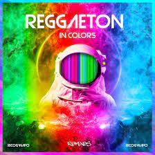
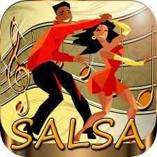
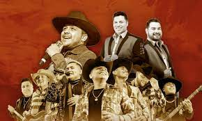
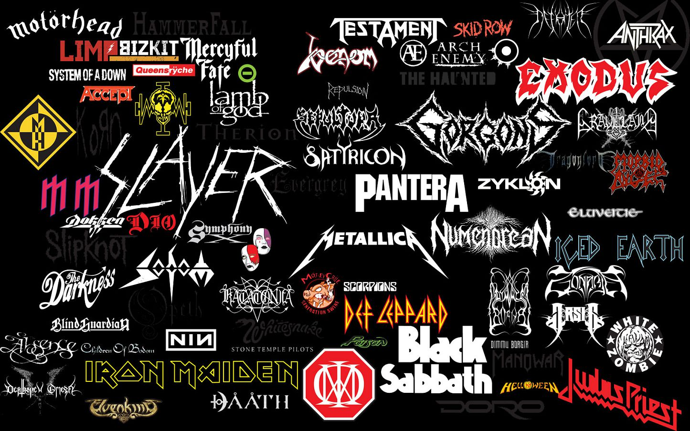
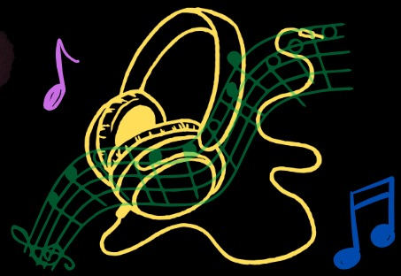

Generos Musicales
¡¡¡¡Bienvenido!!!! A Kinal Sounds nuestra pagina se encarga de recopilar a los mejores artistas y generos de muisca.
Par que tu puedas escoger ese genero que tanto te apaciona, como Regueton, indi entre muchos mas
Electronica
Género musical que se crea y produce utilizando instrumentos electrónicos y electromecánicos, diversos instrumentos digitales o la llamada tecnología musical basada en circuitos.
Regueton

Reggaetón es un estilo de música bailable urbana y latina que mezcla el reggae con el hip hop con letras en español mezclado con ritmos latinos como la bomba y la salsa.
Rock
Salsa

Es un género musical que surge de la mezcla de ritmos latinos tan reconocidos como el chachachá, el mambo y el son, entre otros, con el uso de instrumentos y estilos estadounidenses.
Regional

El regional mexicano es un término que comprende una familia de géneros, ritmos y tradiciones musicales del país como la música banda, norteño, mariachi y cumbia, que en los últimos años se ha fusionado con otros como el hip hop, el rock y el pop.
Kpop
Inde
Bachata
La bachata es un género musical originario de la República Dominicana. Se caracteriza por sus melodías románticas, ritmo pegajoso y letras que suelen abordar temas de amor, desamor, pasión y nostalgia
Metal

es un género musical que tiene elementos del rock and roll, blues y música clásica. Se caracteriza por ritmos potentes logrados mediante la utilización de guitarras distorsionadas, batería con doble pedal, y bajo pronunciado.
Pop
El pop se caracteriza por sus melodías pegajosas y fáciles de recordar, estructuras de canciones convencionales (verso-coro-verso) y letras que suelen tratar temas de amor, relaciones, experiencias personales y celebración de la juventud y la diversión

Sobre nosotros
¡Bienvenido a Kinal Mussic, actualmente somos una pequeña pagina de musica, sin embargo eperamos darte un buen servicio con nuestro catalago de exitos en distintos generos musicales!